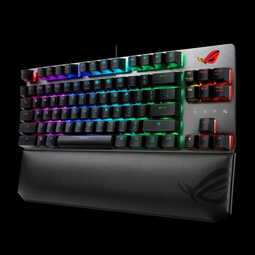
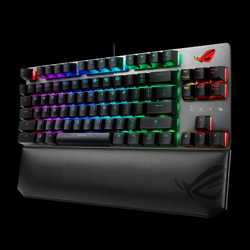

|
ROG Strix Scope TKL Deluxe is a compact, tenkeyless mechanical keyboard with Xccurate Design – an extra-wide Ctrl key that's easier to feel and find in the FPS frenzy. With a choice of Cherry MX switches for optimal feel and reliability, an all-aluminum top plate for strength and style, and more customizable Aura RGB lighting than we've ever engineered into a ROG keyboard, Strix Scope TKL Deluxe empowers you to play like a pro and rise above the battlefield crowd.
TKL FORM FACTOR FOR FPS
ROG Strix Scope TKL Deluxe is a high-performance mechanical gaming keyboard with a small footprint, freeing up space on your worktop for broader mouse movements – perfect for the lower sensitivity settings that slow the reticle for leveled-up aiming accuracy. The keyboard is topped with an aluminum faceplate for everyday resilience, and finished with a striking slash aesthetic for a little touch of style.
|
NEW ROG Strix Scope TKL DeluxeProduct Code: IRMT1612 
R 2 500 Availability: 5 In Stock Condition: New |
MADE FOR PORTABILITY
The compact and frameless design of ROG Strix Scope TKL Deluxe is ideal for minimalists, or those who simply need more space. The keyboard comes with a detachable cable, making it easier and safer to stow and carry in a backpack. The Type-C cord also doubles as a charging lead for mobile devices while on the go.
READY FOR DAY & NIGHT
The Quick-Toggle Switch prepares ROG Strix Scope TKL Deluxe for gaming or the daily grind, toggling the top row between media or function (Fn) key input – so it's easy to switch modes for work or play. The keyboard is topped with an aluminum faceplate for everyday resilience, and finished with a striking slash aesthetic for a little touch of style.

MAGNETIC & ERGONOMIC
WRIST REST ROG Strix Scope TKL Deluxe comes with an ergonomic wrist rest that's filled with soft padding and finished with leatherette, for cool comfort that molds naturally to your posture. Strong magnets keep this cushioned pad in place during play, and also enable it to be rapidly detached when you need to change your angle of attack or stow your keyboard in a bag.

| Connectivity Technology | |OS Support | |Dimension | |Weight | |Interface availabl |
|---|---|---|---|---|
| Wired, USB 2.0 | |Windows® 10 Windows® 10 64-bit | |356 x 136 x 40 mm (keyboard) 356 x 75 x 21 mm (wrist rest) | |860 g with cable Keyboard: 811 g Wrist rest: 170 g | |Keyboard : USB |
{kind=link}
{kind=link}